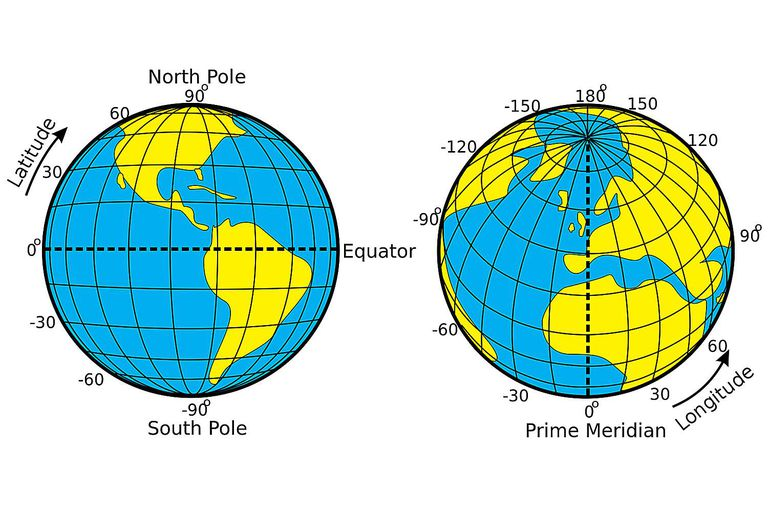
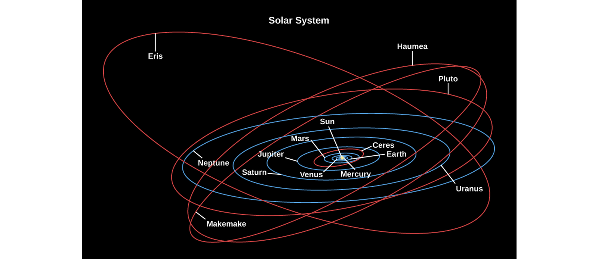

ASTR101 Ch 4, 7
Table of Contents
- Ch 4 - Earth, Moon, and Sky
- Ch 7 - Other Worlds: An Introduction to the Solar System
Ch 4 - Earth, Moon, and Sky
Earth and Sky
- Earth's orbit is nearly a perfect circle
- Where do seasons come from?
- If it's Summer here, what season is it in Australia?
Locating Places on Earth
- A man waves hello to a penguin, walks 50 miles, turns right, walks another 50 miles, turns right again, walks another 50 miles, and waves hello to the same penguin, who has not moved. Where is he?
- What if it were a polar bear?
- Does Earth rotate towards the East or the West?
Latitude and Longitude
- Great circles: circles on surface of sphere sharing sphere center.
- Latitudes are meridians, passing through N and S poles.
- Longitudes start at Greenwich, England (GMT!), the Prime Meridian, 0°. They go 180° east and west.
- How can we use Polaris to find our latitude?
- How can we find our latitude?
- How can we find our longitude? (EC)

Figure 1: Djexplo/Wikimedia Commons
The Seasons
- What we know:
- The Earth's orbit is nearly circular, changing by <3%.
- Earth is closest to the Sun in January.
- The two hemispheres have opposite seasons.
- Conclusion: The seasons are caused by Earth's tilt!
- How, exactly?


- So one hemisphere gets more heat than the other during its Summer.
- But it also gets that heat for longer! Longer days!
- Does the sun rise in the Northeast or Southeast?

Limits of the sun's latitudinal movement
- Northernmost: June 21 (Summer Solstice)—sun over Tropic of Cancer (23° N), no nights in Arctic Circle, no days in Antarctic Circle.
- Southernmost: December 21 (Winter Solstice)—sun over Tropic of Capricorn (23° S), no days in Arctic Circle, no nights in Antarctic Circle.
- Sun crosses equator at vernal (Spring) and autumnal (Fall) equinoxes—North and South hemispheres are both 12 hours here.


The Seasons at Different Latitudes
- The Sun appears to rise earlier and set later because of atmospheric refraction.
- Twilight is when the sun is 18° below the horizon and the sky doesn't appear completely dark.
- This has an effect on seasons, weather, and day lengths.
- Eg, July and August are hotter than June because the atmosphere takes time to heat up, just like the day is hotter at sunset than sunrise.
Keeping Time
The Length of the Day
- The solar day is based on the sun's position in the sky. There's also the sidereal day, based on the actual 360° rotation of the Earth.
- Recall from last week's demo that a solar day is about 4 minutes longer than a sidereal day because of the Earth's orbital motion.

Apparent Solar Time
- So stars rise earlier and earlier according to the apparent solar time we use, based on the position of the Sun in the sky.
- The meridian is the great circle that crosses our zenith; hence a.m. (ante meridiem) and p.m. (post meridiem).
- Apparent solar time is not great for Astronomy, since the apparent solar day length varies in the year, the slight elliptical orbit of the Earth, and Earth's axis not being perpendicular its orbital plane.
Mean Solar Time and Standard Time
- Mean solar time is what we use, based on the average value of the solar day in the year, 24 hours—noon is when the Sun crosses the meridian.
- Time changes based on longitude, continually, but we split Earth into time zones roughly one hour each (fun fact, India chose a half-zone, 5.5 hours, and China only uses one time zone!).
- DST (daylight saving time) is ahead of the local standard time by one hour (Fall back, Spring Forward), to prolong sunlight into evening hours.
The International Date Line
- Lifehack, travel around the world to go back in time. Just kidding, the International Date Line, along the 180° meridian, changes the calendar date by one day. No loopholes!
The Calendar
The Challenge of the Calendar
- The entire calendar is based on Astronomy:
- Day is based on Earth's spin—defined as 1.0000 solar day.
- Month is length of full lunar cycle—29.5306 days.
- Year is based on Sun, and Earth's rotation around it—365.2422 days.
- Week? After Roman gods assigned to planets.
- These don't divide evenly..
Early Calendars
- Stonehenge (built over three periods, 2800-1500 BCE) concentric series of stones and ditches—some aligned with Sun and Moon during critical rising and setting periods (such Summer and Winter solstices).
- Mayans had a complex calendar which could predict Astronomical events through an observatory.
- Ancient Chinese calendar centered around 12-year Jupiter cycle—these are the 12 year signs of the Zodiac, which correspond to Jupiter's position along the Zodiac.
- Our calendar derives from the Sumerians, continuing with Egyptians and Greeks, leading to Ceasar's Julian Calendar, at 365.25 days/year, using leap years (with one extra day, 2/29) every four years (years divisible by 4).
- The Islamic Calendar is still lunar.
The Gregorian Calendar
- Pope Gregory XIII corrected the 11 minutes/year that the Julian calendar was off—off enough that the calendar was 10 days off by 1852.
- October 4, 1582, 10 days were immediately skipped in the calendar (to get back on track). Like Julian calendar, every four years is a leap year—except on centuries not divisible by 4 (e.g., 1700, 1800, 1900). The year 2000 was a leap year, but not the year 1900.
- Catholic countries followed suit, other countries later—American colonies skipped from September 2, 1752 to September 14, 1752 (12 days!). Russia had to omit 13 days by the time it adopted the calendar during the Bolshevik revolution.
Phases and Motions of the Moon
- Moonlight is literally reflected sunlight.
- Because of angles, results in phases (difference appearances, like full and crescent moon).
Lunar Phases
- Sun only moves 1/12 of the sky in one month—we can ignore this when looking at (monthly) lunar cycles.
- Sun illuminates half the moon, we observe at an angle.

- Waxing=growing, waning=shrinking
- Moon rises later and later than sun each day.
- Full moons are not generally blocked by the Earth—the diagram is not to scale and the Earth-Moon distance much larger, so Earth's shadow misses the moon most of the time (except lunar eclipses). The moon's also 5° from Earth's orbital plane.
The Moon's Revolution and Rotation
- Period of revolution and period of rotation are the same (this is called synchronous rotation),
- So, we only see one side of the moon!
- We measure the solar month—the period of the moon's cycles—as 29.5306 days, but the sidereal month (with respect to the stars) is 27.3217 days.
Ocean Tides and the Moon, The Formation of Tides
- Earth is stretched to a prolate spheroid by the moon's varying gravity across it, only about 20 cm.
- The effect is complicated by land mass shapes, friction, earth's rotation, wind, variable ocean depth, and so some places have large tides, some places small tides.

Eclipses of the Sun and Moon
- Sun and moon look like they're the same size (1/2°)—but the Sun is 400 times larger, and 400 times farther away—what a coincidence!
- An eclipse consists of dark umbra and lighter penumbra.

Eclipses of the Sun
- Are a possibility twice a year, when the lunar and solar paths cross.
- A partial eclipse occurs when the Moon simply partially covers the Sun.
- An annular eclipse is when the moon appears smaller than the sun and the sun's ring is seen (this is more common).
- A total solar eclipse occurs when the Moon is nearer than its average distance to Earth, and completely covers the sun.
- Total solar eclipse is a small area on the Earth, along the eclipse path.
- Lasts less than 7 minutes at any point on the path.
- Surrounded by larger area penumbra.

Eclipses of the Moon
- In a lunar eclipse, Everyone on Earth sees the same Earth shadow on the moon, so these are much less rare for a given location than a solar eclipse.
- Earth's shadow covers four moons' widths.
- Can last as long as 1h40.
Ch 7 - Other Worlds: An Introduction to the Solar System
Overview of our Planetary System
- Solar system: Sun, planets, moons, rings, debris (asteroids, comets, dust).
- All formed together around 4.5 billions years ago.
- Every planet has been flown past, orbited, or landed on by a probe.
- Probes have penetrated Jupiter's atmosphere and landed on Venus, Mars, the Moon, Saturn's moon Titan, and asteroids and comets.
An Inventory
- Planets orbit on the same plane, while dwarf planets don't.

- Four terrestrial planets; Mercury, Venus, Earth, and Mars—small, made of rock/metal.
- Four jovian, or giant planets: Jupiter, Saturn, Uranus, Neptune—large (1400 Earth fit in Jupiter, EC), made of ice, liquid, and gas.

Smaller Members of the Solar System
- Only Mercury and Venus are without moons.
- Largest moons are the Moon, 4 Galilean moons (Jupiter), and Titan (Saturn) and Triton (Neptune).
- Each of the giant planets has a ring with orbiting bodies ranging in size from dust to mountain.
- Asteroids are remnants of the formation of the solar system, some of them were likely captured as small moons.
- Comets are also remnants of solar system formation, but are made of ice (eg, carbon monoxide/dioxide, water) and orbit farther out.
- Meteors are broken rock (cosmic dust) and burn up if they enter Earth's atmosphere, become a meteorite if they hit the ground.
A Scale Model of the Solar System
- The text presents a scale model of the solar system, scaled down by 109.
Composition and Structure of Planets
The Giant Planets
- Recall there are the rocky terrestrial planets and icy jovian planets—they must have formed under different conditions.
- Largest planets Jupiter and Saturn close to Sun in composition. Heavier elements sink to rocky, metal, ice center, bulk is liquefied hydrogen.
- Uranus and Neptune also have a core of rock/metal/ice, but smaller atmospheres.
The Terrestrial Planets
- Most abundant rocks are silicates, made of silicon and oxygen, and most common metal is iron. Mercury has the greatest proportion of metal, the other 3 have similar composition of 2/3 silicates and 1/3 iron-nickel/sulfur combinations.
- Terrestrial planets also have denser matter in center of planet, leading to theory that they were once also liquid. Process of separating a planet's interior layers into different compositions and densities is called differentiation, which occurs when the planet is hot (melting point of rocks, ~1300K), and stays as the planet cools.
Moons, Asteroids, and Comets
- Most moons share the composition of their planet (rocky for terrestrial moons and icy with a hard core for giant planets' moons)
- Only the largest asteroids are differentiated.
Temperature: Going to Extremes
- Remember the light intensity falls as \(1/r^2\); this light also provides heat. The temperature reduces approximately as \(\frac{1}{\sqrt{r}}\), so the farther you are from the Sun, the colder it gets. Mercury (.39 AU from the Sun) is about 500 K, while Pluto (39.5 AU from the Sun) is 50 K.
- Remember, planetary atmosphere has a big effect on this; heat kept in by greenhouse effect; in which atmosphere has greater transparency to (incoming) visible radiation than (outgoing) infrared. The effect results in Venus having greater temperature than Mercury!
- Earth is the only planet we know of with surface temperature generally matching liquid phase of water.
Geological Activity
- Planets shaped in part by comet collisions—mostly during solar system formation, but even now; eg., Comet Shoemaker-Levy 9 with Jupiter, Summer 1994, which came within 660 million km.
- Internal forces can build mountains and build new islands; eg, volcanoes, earthquakes. Earth and Venus are most active planets, and even some jovian planet moons are active! The Moon has been dead and inactive for billions of years.
- Hawai'i's getting a new island by 32,018! (maybe)
- Earth and Venus have molten cores.


Dating Planetary Surfaces
Count the craters
- Rate of impact has been pretty constant for several billion years.
- Can only count to date when the planet "smoothed itself out" through, eg, lava flow.
- Can also be used to date smoothing events and date terrain.
Radioactive Rocks
- Some radioactive nuclei are unstable and can split apart (decay) to other nuclei, at random times.
- But we do know their half-life; the time for approximately half of them to decay in a large sample.
- The original unstable nuclei are the parents and they split apart to daughter particles.
- Every half-life, half of the particles will have decayed; this is the principle behind Carbon dating!

Origin of the Solar System
- An exoplanet is a planet outside of the solar system. Some of these range between the terrestrial and giant planets in size; termed superearths.
- In some exoplanet systems, the giants are close to the star and the terrestrial planets are farther (to be discussed in ch 21)!
Looking for Patterns
- Planets orbit the Sun (and, mostly, themselves) counter-clockwise, and the Sun orbits itself counter-clockwise, evidence that the Sun and planets may have formed from a spinning cloud of gas and dust called the solar nebula.
- Sun, Jupiter and Saturn have similar compositions, evidence they may have been formed from the same material reservoir.
- Terrestrial planets have less of these materials, since at their temperature so close to the Sun the materials would evaporate (whereas they're liquid/ice/gas in the vicinity of the giant planets).
The Evidence from Far Away
- We can compare this present data to star systems far away that are in varying stages of formations like that of the solar system to get a good picture of the birth of the solar system.
- The name for solar nebulas (the cloud posited to birth the solar system) outside of the solar system is circumstellar disks.
Building Planets
- As planets form from circumstellar disks common around young stars, we begin to see planetesimals—planet foetuses. Computer simulations with Physics laws taken into account support these theories.
- Still leaves the questions; why do Uranus and Pluto spin on their sides, why does Venus spin slowly around itself retroactively? These could be the results of early collisions.